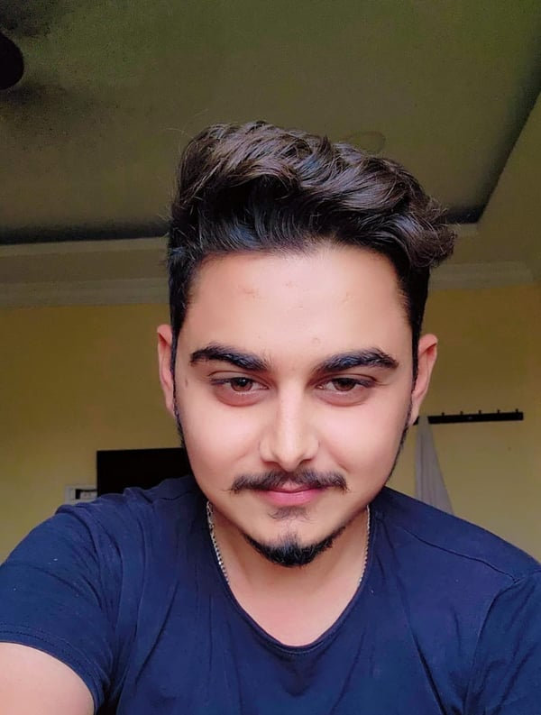

D S N Shashikant
Full Stack + AI Engineer
Email: saishashikant4@gmail.com • Phone: +91 81097 10677 • Portfolio • linkedin.com/in/shashikant987 • github.com/SaiShashikant

Summary
Full Stack + AI Engineer with six years at Kovaad Technologies, taking an AI communication platform for neurodiverse children from early MVP to a production system used daily by trainees, guardians, therapy centers, and admins. Designs and ships features end to end: Next.js role-based dashboards, NestJS microservices on GCP Cloud Run behind Kong, real-time Socket.IO chat and voice, and multi-model LLM orchestration with LangChain and RAG. Also delivered the frontend for SEG-PACE, an enterprise procurement, pricing, and finance platform for manufacturing. Comfortable owning work from design document to deployment, with a strong focus on reliability, child safety, and well-tested code.
Key Achievements
- Primary author of 4 of Kovaad’s 6 NestJS microservices (chats, users, members, payments), writing 68–89% of the commits in each, plus 1,000+ commits to the main Next.js application.
- Unified 4 LLM providers (Gemini, OpenAI, Anthropic, Llama) behind a single LangChain model layer, keeping conversation features provider-agnostic.
- Shipped child-safety controls end to end: red-flag alerts from live chats, instant trainee suspension with forced logout and token revocation, and an append-only audit trail.
- Built real-time notifications for all 4 user roles, with Firestore persistence and WebSocket delivery across 20+ event types.
- Contributed to a 670+ case automated test suite spanning the web app and backend services.
Experience
Full Stack + AI Engineer
Oct 2020 – PresentKovaad Technologies Private Limited · Full-Time · Delhi, India
- Orchestrated full-lifecycle platform architecture from early MVP to production, driving system design across frontend, backend, real-time systems, and GCP cloud infrastructure.
- Engineered real-time chat infrastructure using NestJS and Socket.IO with Redis-backed state recovery, enabling live multi-client sessions with zero message loss.
- Orchestrated multi-model agent workflows (Gemini, OpenAI, Anthropic) via LangChain and Pinecone vector search (RAG) over session context for continuous guided interaction.
- Integrated real-time streaming speech-to-text (Google STT and Whisper/OpenAI) and TTS pipelines into the interactive session loop.
- Architected role-based dashboards (Admin, Center Head, Instructor, Observer) using Next.js App Router with optimized responsive layouts and real-time UX.
- Deployed containerized microservices using Docker, Kong API Gateway, and GCP Cloud Run with automated CI/CD pipelines via GitHub Actions.
- Implemented secure authentication and monetization infrastructure leveraging Firebase Auth/ACL and Razorpay automated B2B/B2C recurring subscription flows.
Frontend Developer (Freelance / Contract)
Jan 2026 – Aug 2026Vindago Innovations LLP · Remote (Project: SEG-PACE)
- Delivered core frontend architecture for SEG-PACE, an enterprise platform streamlining manufacturing procurement, sales pricing, and financial reporting.
- Built complete cost-breakdown lifecycle flows, including raw material purchase programs and procurement price premise workflows, multi-versioning, approval state machines, and real-time foreign-exchange and raw-material autosave calculations.
- Engineered the sales pricing workspace supporting multi-tab currency and material conversions and master data updates across business units and customer-part links.
- Implemented high-volume finance data screens for profitability analysis, financial accounting, and net-sales reporting, with bidirectional Excel upload and download.
- Designed a high-density enterprise UI using React, TypeScript, Vite, MUI, TanStack Query, Jotai state management, and CASL for granular role-based access control.
Selected Projects
Conversation Orchestration Engine — Kovaad
NestJS, LangChain, Redis, Firestore
- Built the topic-of-conversation engine that steers LLM sessions toward structured social-skill practice, picking topics from upcoming events, profile hobbies, and past high-engagement conversations when a child goes quiet.
- Designed gap-aware session resume: silent continue under 15 minutes, a one-line recap and prompt at 15–30 minutes, and a fresh greeting after 30, plus “be right back” pauses and an in-chat End Session flow with topic selection.
AI Progress Reports — Kovaad
LangChain, pdfkit, NestJS Schedule, Redis
- Automated LLM analysis of chat transcripts into PDF progress reports for guardians, triggered after a trial session, on a recurring schedule (daily cron once 15+ days and 12+ hours of chat accrue), or on demand.
- Cached analyses in Redis for 7 days and notified guardians in real time when a new report is ready.
Payments & Subscriptions Microservice — Kovaad
NestJS, Razorpay, GCP Pub/Sub, React-PDF
- Built the payments service from its first commit: retail subscriptions for guardians and B2B bulk seat purchases for therapy centers, billed in INR and USD, with purchasable add-on packs.
- Implemented the in-app paywall, invoice generation, and B2B guardian onboarding emails, with Pub/Sub messaging between services.
Trainee Safety & Access Control — Kovaad
NestJS, Socket.IO, Firebase Auth
- Red flags raised in live chats trigger caregiver email alerts; caregivers can suspend a trainee instantly, forcing logout over WebSocket and revoking Firebase tokens.
- Recorded every suspension and restore in an append-only audit log, and locked shared access links to their intended recipient.
Real-time Voice Chat — Kovaad
Next.js, Socket.IO, Google Cloud Speech-to-Text / Text-to-Speech, Whisper
- Built the WebSocket voice loop between the web app and chat backend: streaming speech-to-text, including mixed-language speech, and gender-matched text-to-speech voices.
- Added idle-timeout handling and session recovery so live sessions survive brief disconnects.
Technical Skills
| Languages | TypeScript, JavaScript (ES6+), Python, SQL, HTML5/CSS3 |
|---|---|
| Frontend | React, Next.js (App Router), Vite, Material UI (MUI), Tailwind CSS, TanStack Query, Jotai, CASL |
| Backend | NestJS, Node.js, RESTful APIs, Socket.IO, Redis, PostgreSQL, Kong API Gateway, Microservices |
| AI & Cloud | LangChain, Pinecone Vector DB, Gemini / OpenAI / Anthropic APIs, Google STT, Whisper, GCP (Cloud Run, Pub/Sub, Firestore), Docker, GitHub Actions, Firebase, Razorpay |